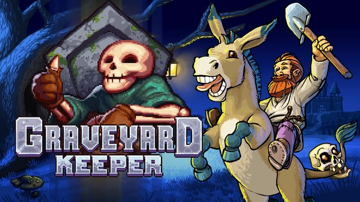
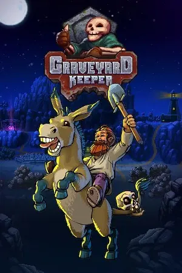

 STEAM REDIRECT
STEAM REDIRECT


Graveyard Keeper is a dark, medieval management game where you run and improve a graveyard while trying to find a way back home. You bury bodies, craft items, farm, and interact with villagers. The game features a large technology tree and interconnected systems that unlock over time, offering a unique but complex take on life-simulation.
Minimum specifications needed
OS Windows 7 (SP1+)
Processor Intel Core i5, 1.5 GHz+
Memory 4 GB RAM
Graphics 1 GB dedicated GPU, Shader Model 3.0+
DirectX Version 10
Network Not required
Storage 1 GB available space
Sound Card Any
I enjoyed the chaos. It's like a pleasant brain teaser. Having to remember what quest NPC is available on what days, managing your daily chores, micromanaging your zombies, trying to work on advancing your tech trees, all while trying to keep your graveyard tidy. There's always something going on. Yet it still comes across as a cozy game. At first I was stressed out when I would forget the day, but then you realize it'll come around again in 20 minutes and in the interim there's a dozen other quest lines you can advance.